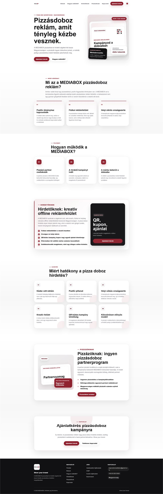
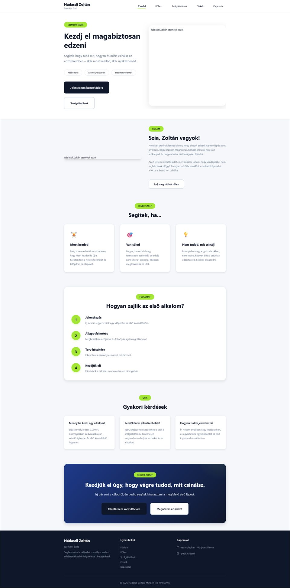

Mi fontos nekem
Szeretek olyan termékeket építeni, amelyek kívül letisztultak, belül pedig megbízhatóak. A legjobb szoftver gyors, csendben működik és valóban hasznos.
Portfólió • Fejlesztő • Builder
Pataki Attila Bence vagyok, full-stack fejlesztő. Modern webalkalmazásokat, automatizációs workflow-kat és valódi üzleti értéket teremtő szoftvereket építek.

Jelenlegi fókusz
Letisztult frontend, stabil backend logika és olyan automatizáció, ami tényleg csökkenti a manuális munkát.
Rólam
A célom nem csak weboldalakat készíteni, hanem olyan rendszereket tervezni, amelyek hatékonyak, skálázhatók és valós helyzetekben is hasznosak. Kifejezetten érdekel a gyakorlatias webfejlesztés, az API-k, az automatizáció és minden digitális eszköz, ami időt spórol a káosz helyett.
Szeretek olyan termékeket építeni, amelyek kívül letisztultak, belül pedig megbízhatóak. A legjobb szoftver gyors, csendben működik és valóban hasznos.
A tiszta struktúrát, az olvasható kódot, a gyakorlatias megoldásokat és a folyamatos fejlődést keresem. Olyan rendszereket szeretek, amelyek növekedés közben sem esnek szét.
Jelenleg full-stack fejlesztésben, automatizációkban és kiberbiztonságban fejlődöm, miközben olyan projekteken dolgozom, amelyeknek valódi haszna és mérhető értéke van.
Szolgáltatások
Kisebb, hasznos digitális rendszerekre fókuszálok, amelyek csökkentik a manuális munkát, érthetőbbé teszik az ajánlatodat és tiszta kapcsolatfelvételi utat adnak az ügyfeleknek.
Gyors, reszponzív céges és szolgáltatói weboldalak tiszta struktúrával, érthető ajánlattal és kapcsolatfelvételre optimalizált tartalommal.
RészletekAdmin felületek, ügyfélportálok, dashboardok és backend logikák, amelyek a napi működést átláthatóbbá és kezelhetőbbé teszik.
RészletekFolyamatautomatizálás, AI asszisztens jellegű workflow-k és API-kapcsolatok, amelyek csökkentik az ismétlődő manuális munkát.
RészletekKészségek
Reszponzív felületek HTML, CSS, JavaScript és modern komponensalapú gondolkodás segítségével.
Node.js, API-k, alkalmazásstruktúra és olyan adatfolyamok, amelyek valós felhasználási helyzeteket támogatnak.
Scriptek és automatizált folyamatok készítése, amelyek csökkentik az ismétlődő munkát és hatékonyabban kapcsolnak össze rendszereket.
Git és GitHub használata a kód kezelésére, a haladás követésére és egy tisztább fejlesztési workflow fenntartására.
Szolgáltatások és alkalmazások összekötése API-kon keresztül, hogy hasznosabb és skálázhatóbb digitális rendszerek jöjjenek létre.
A biztonságtudatos gondolkodás, rendszerismeret és biztonságosabb szoftveres gyakorlatok folyamatos mélyítése.
Projektek
Néhány példa arra az irányra, amerre építkezem. Ezek a projektek az automatizáció, a gyakorlatias alkalmazások és a modern fejlesztés iránti érdeklődésemet mutatják.

Országos pizzásdoboz-reklám szolgáltatáshoz készített reszponzív weboldal, külön kommunikációval a hirdetők és pizzériapartnerek számára. Az oldal célja a szolgáltatás érthető bemutatása és az ajánlatkérések támogatása.

Modern és mobilbarát weboldal egy személyi edző számára, szolgáltatásbemutatással, konzultációs felhívásokkal és bizalomépítő tartalmi struktúrával.
Unityben készülő üzletmenedzsment-játék prototípus, amelyhez játékos-interakciós, készletkezelési, rendelési, polcfeltöltési és csomagkezelési rendszereket fejlesztek.
Kapcsolat
Ha olyan embert keresel, aki szeret gyakorlatias digitális rendszereket építeni, workflow-kat javítani és céllal fejleszteni, kapcsolódjunk.